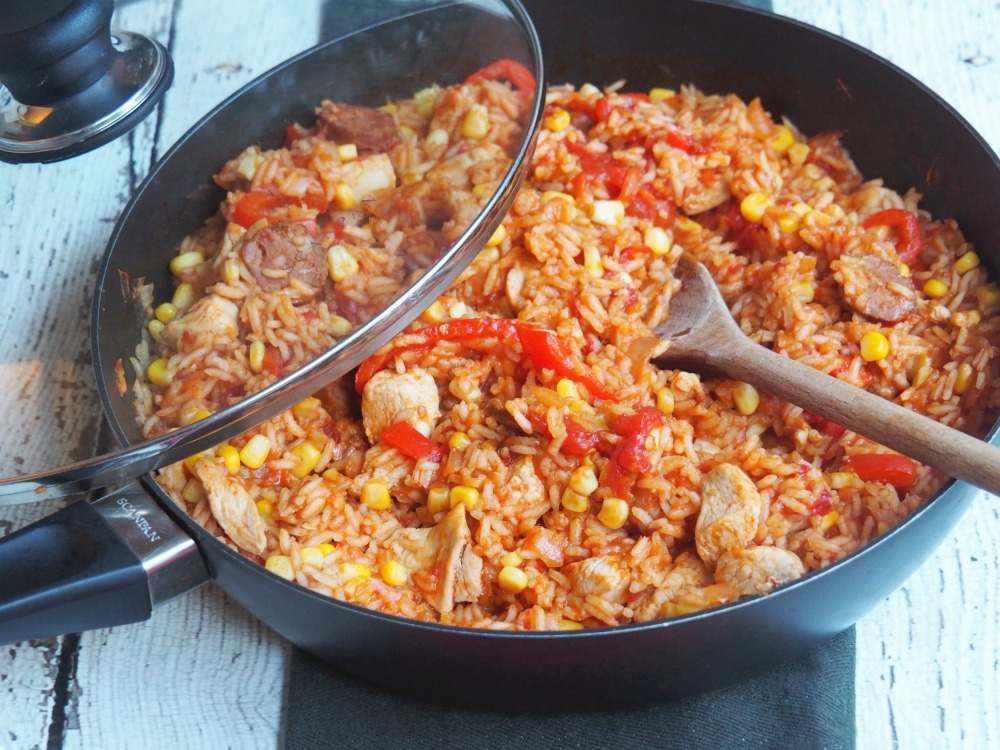

Chicken and Chorizo Jambalaya

Description
A delicious jumble of smoky sausage, chicken, tomato and rice. This chicken jambalaya also makes a great lunch the next day.
Ingredients
- 1 tbsp olive oil
- 2 chicken thighs, boneless, skin removed, cut into 2½cm/1in pieces
- 75g/2½oz chorizo or smoked sausage such as kobanos, sliced
- 1 small onion, finely chopped
- 1 celery stick, finely chopped
- 1 garlic clove, finely chopped
- 1 red pepper, thinly sliced
- 200g tin chopped tomatoes
- ½ tsp cayenne pepper, or to taste
- 150g/5½oz basmati rice
- 200ml/7fl oz chicken stock (made from ½ stock cube)
- salt and freshly ground black pepper
- handful fresh parsley, finely chopped, optional
Cooking Instructions
- Heat the oil in a medium saucepan with a tight-fitting lid and fry the chicken and sausage for 3 minutes.
- Add the onion and celery, season well and fry for 5 minutes, or until softened. Add the garlic and pepper and cook for a further minute. Add the tomatoes and cayenne and cook for 2 minutes, then add the rice and stir well.
- Pour over the stock, bring to the boil, put the lid on, turn the heat down as low as it will go and cook for 12 minutes.
- Turn off the heat and leave the rice to stand for 12 minutes. Take off the lid, fluff up the rice and serve immediately, garnished with the parsley, if using.